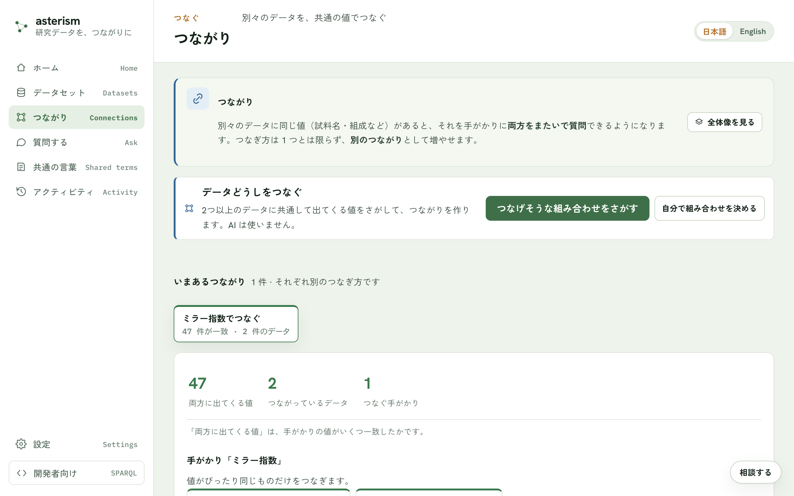
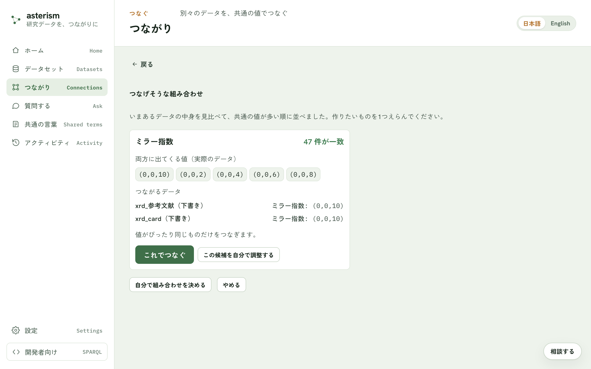
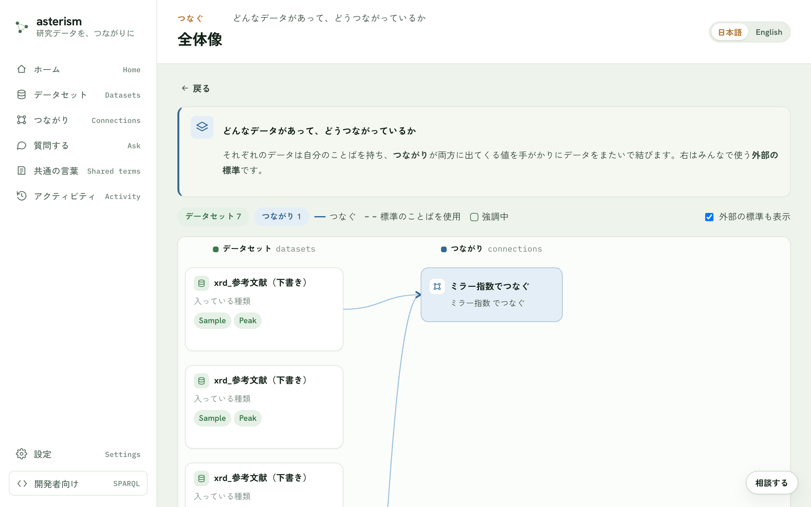

つながり — 別々のデータを共通の値でつなぐ
つながりとは
別々のデータに同じ値（試料名・組成など）があると、それを手がかりに両方をまたいで質問できるようになります。これが「つながり」です。作るときに AI は使いません。実際の値どうしを機械的に突き合わせて、共通の値を見つけます。
つなぎ方は 1 つに限りません。同じデータどうしでも、別の手がかり（組成でつなぐ、著者でつなぐ、など）で新しいつながりを増やせます。
前提
つながりを作るには、公開済みのデータが 2 つ以上必要です。まだ 1 つしか公開していない場合は、先にもう 1 つ公開してください。
入口
メニューの「つながり」から、いまあるつながりの一覧を見たり、新しく作ったりできます。データセットの詳細画面の「つながり」タブからも、そのデータセットに関わるつながりを確認できます。
{kind=link}

つなげそうな組み合わせをさがす
「つなげそうな組み合わせをさがす」ボタンを押すと、いまあるデータの中身を自動で見比べ、共通の値が多い順に候補を提示します。
候補カードには次の情報が付きます。
- 一致した値の実例（実際のデータの値）
- つながるデータセットと、その項目
- 注意（一致した値が 1 種類だけでたまたまかもしれない、データの大きさが大きく違う、など）
作りたい候補が見つかったら「これでつなぐ」ボタンで確認画面に進み、つながりに名前を付けて作ります。
{kind=link}

自分で組み合わせを決める
候補まかせにせず、自分でつなぎ方を決めることもできます。「自分で組み合わせを決める」ボタンから、次の順で指定します。
- つなぐデータセットを 2 つ以上選ぶ
- つなぐ概念（英数字のキー。例: composition, crystal_system）を決める
- 各データセットで、その概念を表す項目を指定する（「AI に提案させる」ボタンで候補を出させることもできます）
- 同じ値とみなす基準（次節）を選ぶ
- この視点（つなぎ方）の名前を付ける
同じ値とみなす基準（正規化）
表記のゆれをどこまで同じ値として扱うかを選べます。
| 基準 | 内容 |
|---|---|
| そのまま一致 | 表記が完全に同じものだけをつなぐ |
| 大文字・小文字を無視 | FeO と feo を同じとみなす |
| 空白の違いを無視 | 前後・連続する空白の違いを無視する |
| 全角・半角を揃える | 全角・半角や互換文字の違いを無視する |
| ゆるく一致 | 大文字小文字・空白・全角半角をまとめて無視する |
| 組成式として揃える | 添字や空白の違いを吸収する（元素の並び順は区別） |
| 組成式＋元素順も揃える | 元素の並び順が違っても同じ組成として扱う |
| カスタム | 手順（プリミティブ）を自分で組み合わせて基準を作る |
組成には大文字・小文字を無視する基準は使えません（Co と CO は別の元素なので、同じ値とみなすと間違った一致になります）。
追加の一致条件
つなぐ概念だけでなく、複数の条件がすべて一致したときだけつなぐ、という指定もできます。たとえば「組成」かつ「結晶系」が両方一致したときだけつなぐ、といった使い方です。
できたつながりの画面
作ったつながりの画面では、次のことが確認できます。
- 両方に出てくる値の一致数と、つながっているデータの件数
- またいで使える道具（この値は何データセットが報告しているか、をその場で調べられます。ここでも AI は使いません）
- 「最新のデータで作り直す」ボタン（つないだあとにデータを追記したときに押します。公開されていないデータは、作り直しても入りません）

つながりどうしを対応づける
別々に作ったつながりが使っていることばが、実は同じものを指しているとき、その対応を残せます。あとから取り消すこともできます。
全体像
「つながり」の画面のいちばん下に、どんなデータがあって、どうつながっているかを 1 枚の図で俯瞰できる「全体像」が常に表示されます。外部の標準（よく使われる標準のことば）も、表示に含めて見ることができます。図の中のつながりを押すと、この画面の上のほうでそのつながりが選ばれます。
{kind=link}

関連
- データに質問する流れは ask.md を参照してください。
- 項目名やことばを揃える話は vocab-and-grounding.mdを参照してください。